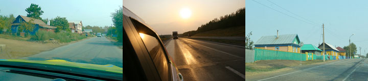
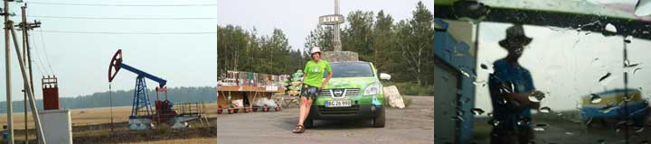
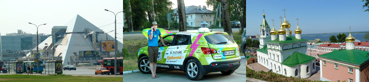
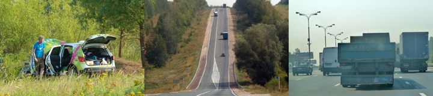
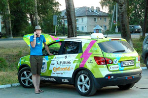
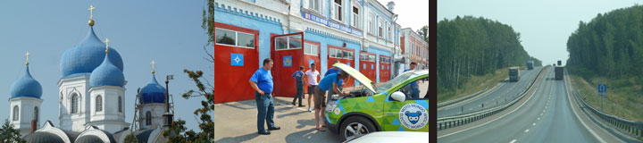
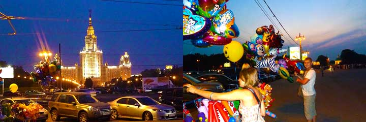
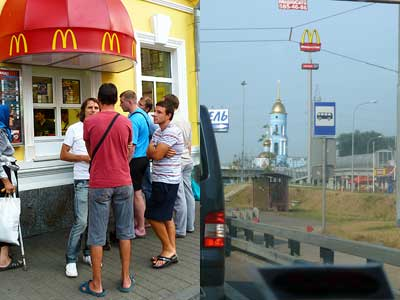
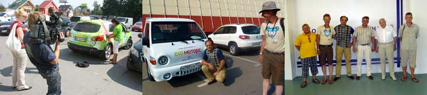

I dag har vi truffet en en vigtig beslutning sammen med vores elbilkonstruktør og skytsengel Søren: Den kære blå bil som er efterladt i Moskva, bliver sendt hjem til Danmark og repareret. Den grønne bil fortsætter ufortrødent mod Mongoliet og Kina.
Den har også haft problemer med ladningen (ikke vandladningen) på grund af varmen. Vi overvejer alle muligheder for at kunne rejse sammen med de venner som skal møde os i Omsk og Ulan Bator. Måske skal vi have en følgebil - købt eller lejet, måske hjælp fra bilvenner i Mongoliet? som sagt begynder eventyret først der hvor man mister kontrollen over begivenhederne, der hvor man får oplevelser man ikke vidste man ville få... Det vil med garanti blive ved med at være spændende.
Nina og Hjalte

Skyerne ulmede ondt, imens hjalte og jeg blev mere og mere irritable. Et par betjente standsede bilen i et forsøg på at presse penge ud af os. De kunne beholde vores pas og kørekort, de kunne arrestere os, de kunne tage bilen osv osv. Vi blev så rasende at vi glemte at være høflige, og tingene tog en uheldig drejning indtil vi sagde at vi var forfattere. Så gik det op for betjentene at vi måske kunne finde på at skrive om dem, og vi slap fri uden at betale. Ja de fnisede ligefrem.
Den Grønne ikke ville lade om aftenen. Stikket vi satte den til havde hverken nul eller jordforbindelse. Det blev mørkt, Hjalte trådte ned i en mudderpøl , og fik elektriske stød når han rørte ved bilen. Jeg selv var derimod urørlig i mine mtb-sko. Så kom tyfonagtige vindstød, støvstorm og store rasende regndråber der piskede os ned ad ryggen. Uvejret varede i et kvarter imens Hjalte skruede på elstikk og ledninger.Til sidst begyndte bilen til at lade. Den stod bag et helt nybygget luxushotel, hvor vi fik et dejligt værelse og en god middag i restauranten.

Vi kom først af sted fra Niznij Novgorod ved middagstid, for at give Den Grønne tid til at lade helt op. Vi havde også brug for selv at lade op, så vi kørte til Kreml, den gamle fæstning. Hjalte vandrede op og tog et kik ud over byen. Jeg gik kun halvvejen, jeg foretrak at finde morgenmad på en lille cafe ved fæstningens fod.
Om eftermiddagen kørte vi ned til et hjørne af Volga ved byen Kazan Jeg tog et dyp i floden, og beholdt det våde badetøj på, for at køle en smule. I skyggen af et træ stillede vi vores bord op og spiste vi frokost. Vi elsker vores måltider i det fri, Møen Grønne kunne ikke spise hverken wat eller volt. Ikke under nogen omstændigheder ville den modtage strøm. For ikke at strande lige der, kørte vi tilbage til landevejen og indlogerede os på et Gostinitza. Med telefonforbindelse til Søren I Danmark asede og masede vi med Grønne indtil den igen kunne lade. Mit håb og min mistanke er at den Grønne bil havde fået et hedeslag, at batterierne var blevet for varme. Sikkerhedssystemet lukker for strømmen ved 42 grader, og hvis det var tilfældet, blev bilen i løbet af aftenen "repareret" ved at temperaturen faldt et par grader. - var det samme tilfældet igår? Hele balladen endte med at Den Grønne fik strøm fra en stikkontakt i vores værelse på første sal, med ledning ud gennem vinduet. Det stod den så og sang så sagte natten lang imens den sugede 220 volt strøm til sig.
Nina

Jeg har kørt op ad en lang bakke med 16% stigning- i 40 graders varme. Ellers var der ikke meget at bemærke- lige landevej, biler og bilos i rigelige mængder hele dagen. De to tosser der kører mig, blev ved med at køre indtil der ikke var flere moteller indenfor rækkevidde, så måtte de hurtigt med ad en markvej. Nina og Hjalte elsker mig, men de har haft svært ved at forstå at jeg ikke kan lade når mine batterier er over 42 grader. Det problem har man jo ikke i Danmark. To aftener her de stået og plaget mig til ud på natten. Men i går aftes lod de mig stå indtil batterierne kun var 40 grader varme - det tog tre timer. Imens de ventede satte Nina og Hjalte campingbordet op, spiste aftensmad og tog deres madrasser frem. De ville sove uden telt ved siden af mig. Endelig klokken 23 fik jeg strøm og jeg ladede natten igennem, bortset fra da generatoren skulle have mere benzin på, og de fem gange den slog fra, fordi jeg åd for meget strøm. Det går jo noget langsomt med genetaror, så jeg begyndte dagen 58% opladet, mens Nina og hjalte nærmest var helt afladede da solen igen begyndte at varme.
Vi kom først af sted fra Niznij Novgorod ved middagstid, for at give Den Grønne tid til at lade helt op. Vi havde også brug for selv at lade op, så vi kørte til Kreml, den gamle fæstning ved Volga. Hjalte vandrede op og tog et kik ud over byen. Jeg gik kun halvvejen, jeg foretrak at finde morgenmad på en lille cafe ved fæstningens fod.
Om eftermiddagen kørte vi ned til et hjørne af Volga. Jeg tog et dyp i floden, og beholdt det våde badetøj på, for at køle en smule. I skyggen af et træ stillede vi vores bord op og spiste frokost. Vi elsker vores måltider i det fri, men Grønne kunne ikke spise hverken watt eller volt. Ikke under nogen omstændigheder ville den modtage strøm. For ikke at strande lige der, kørte vi tilbage til landevejen og indlogerede os på et Gostinitza. Med telefonforbindelse til Søren i Danmark asede og masede vi med Grønne indtil den igen kunne lade. Mit håb og min mistanke er at den Grønne bil havde fået et hedeslag, at batterierne var blevet for varme. Sikkerhedssystemet lukker for strømmen ved 41,5 grader, og hvis det var tilfældet, blev bilen i løbet af aftenen "repareret" ved at temperaturen faldt et par grader. - Var det samme tilfældet igår? Hele balladen endte med at Den Grønne fik strøm fra en stikkontakt i vores værelse på første sal, med ledning ud gennem vinduet. Det stod den så og sang så sagte natten lang imens den sugede 220 volt strøm til sig.
Nina
Efter middags-ladepause på en brandstation kom vi om aftenen til Nizgi Novgorod, en ret stor by hvor to floder mødes. Vi så enorme fabrikker der nu lå i ruiner. Da vi var ved at løbe ud for strøm tog vi til det store dyre hotel i centrum. Der sagde de at vi kunne tage strøm fra nogle spillemaskiner, og ud af et vindue. Men så opdagede de at vi manglede den "Registrering" som turister får ved ankomst til lufthavnen. Den registrering som vi havde fået ved grænsestationen duede ikke! Tilsidst måtte vi køre igen. Vi fandt det ret komisk at hotellet nægtede at tage imod turister i egen bil...et mindre hotel kunne overtales til at tage imod os. Fra vores værelse fik vi ledning ud til bilen. Men nu nægtede Grønne at tage imod strøm - den havde vist fået noget uspiselig strøm i sig fra et oldgammelt stik på brandstationen. Efter en telefonsamtale med Søren fik hjalte omsider laderen igang.To timer efter midnat, kom vi til ro med Grønne tilfreds spinnende udenfor vinduet . Vi elsker Grønne, som har suset omkring i Moskva med 100 km i timen, og kørt over 4000 kilometer.
Den pålidelige Grønne bil har trofast kørt os gennem storbyens trafik hver dag i en uge. Ialt 700 kilometer i Moskva alene, og 3.800 kilometer siden vi forlod Danmark for en måned siden. Uden den grønne bil ved jeg slet ikke hvad vi skulle have gjort, og der var altid strøm nok til at komme hjem igen. Den blå bil bliver endnu nogle dage ved Moskvas kommunale elbilværksted indtil Søren kommer og reparerer den. Men vi må videre, og den kære Blå bil må så indhente os senere.
Efter et sidste festmåltid i deres knastørre have i 39 graders varme tog vi adsked med vores russiske venner. Smog og tæt trafik forfulgte os hele eftermiddagen, suppleret af røg fra store skovbrande. I en gran-og birkeskov , som her stadig er nok af, stillede vi vores camping- bord op og spiste aftensmad. Vi havde købt brød og pølse, havde også gulerødder og smøreost på tube. Nu står den grønne bil og synger uden for et lille hotel med el-ledning ud fra vores vindue i stueetagen. Lastbilerne drøner forbi udenfor, det vil de sikkert blive ved med hele natten. Nina og jeg sidder nøgne på sengene og skriver. Vi er 150 km fra Moskva.
Gennem et Helvede af trafikkøer ind til byen, hvor vi skulle betale et rejsebyro som havde hjulpet os med at få russiske visa. Vi har efterhånden fået hørt hele Johannes V Jensens "Kongens fald" på cd, to gange imens vi har siddet fast i trafikken. Inden vi kom ud af bilen var det langt over frokosttid, så vi fandt en italiensk restaurant. Pæn indretning og amerikansk jazzmusik. Vi bestilte "bussineslunch" som var en førsteklasses russisk menu. Det var aften inden vi nåede ud til den blå bil, som var fuldt opladet men stædigt nægtede at starte.
På udsigtspunktet foran universitetet mødtes vi med Oleg for at sige farvel. På denne overophedede fuldmåneaften kom folk for at vise sig selv og deres biler eller motorcykler frem. Den grønne elbil, som kører perfekt har sjældent følt sig bedre tilpas. Nogle gadeartister lavede akrobatik og dansede. En ballonsælger solgte vidunderlige balloner, og Hjalte købte øl i en kiosk. Først ved midnatstid var vi hjemme hos Mavrina og Dima til en sen middag i haven. Naboen kom med en flaske vin fra Grusien. Det var lykken at være i den tørkeramte oase efter de mange varme timer i moskvas trafik. Hjalte
Dima og Marina kørte sammen med os 60 km ind til den skole i centrum som de har været med til at starte. Det er en skole a la Steiner som de har skabt i rummelige gamle bygninger. Trods børnenes sommerferie var hele skolen fuld af kreativitet og god stemning, forældre og lærere var i gang med at forberedte det nye skoleår. Senere så vi deres lejlighed i byen: to små lejlighede slået sammen, syv værelser ialt, en uhyre luxus. Med deres tre teenagebørn og en gammel mor virkede den ikke stor, men en smule klaustrofobisk på grund af de små rum med gardiner der lukkede af for udsynet.
Hvad gør man lørdag aften? Teenage døtrene stemte for shopping og Mac Donalds. De mente ikke at der i hele verden kunne være større shoppingcentre. Det blev nu til en italiuensk cafe med kaffe og kager. Imens vi sad der i 40 graders varme begyndte det at tordne,

Dagen gik med forgæves forsøg på at få den blå telefonerne til at virke. Vi vidste ikke at der skulle en særlig russisk tilmelding til telefonerne. Oleg, vores russiske redningsmand som havde skaffet værksted til os, gav os frokost sammen med Moskvas elbillobby.
Nogle af Dima og Marinas venner havde inviteret os til middag om aftenen. De har bygget et hus på 700 kvadratmeter, hvor de bor 3 generationer sammen.
Støvede og svedige efter en hel dag i solen udenfor Moskva kommunes bilværksted satte vi GPSen til og trillede ud ad motorvejen. Efter mange kilometer begyndte GPSen at køre rundt og rundt med os. Efter et par mindre skænderier måtte vi til sidst ringe efter hjælp hos den familie vi skulle besøge. Sasja blev sendt ud efter os og fandt os ved hjælp af mobiltelefonerne et halvt hundrede kilometer fra målet. Det var over midnat før vi nåede frem til den sultne familie, der havde ventet med maden siden kl 8. De sidste kilometer var ret nervepirrende for os da den grønne bil var ved at købe ud for strøm.